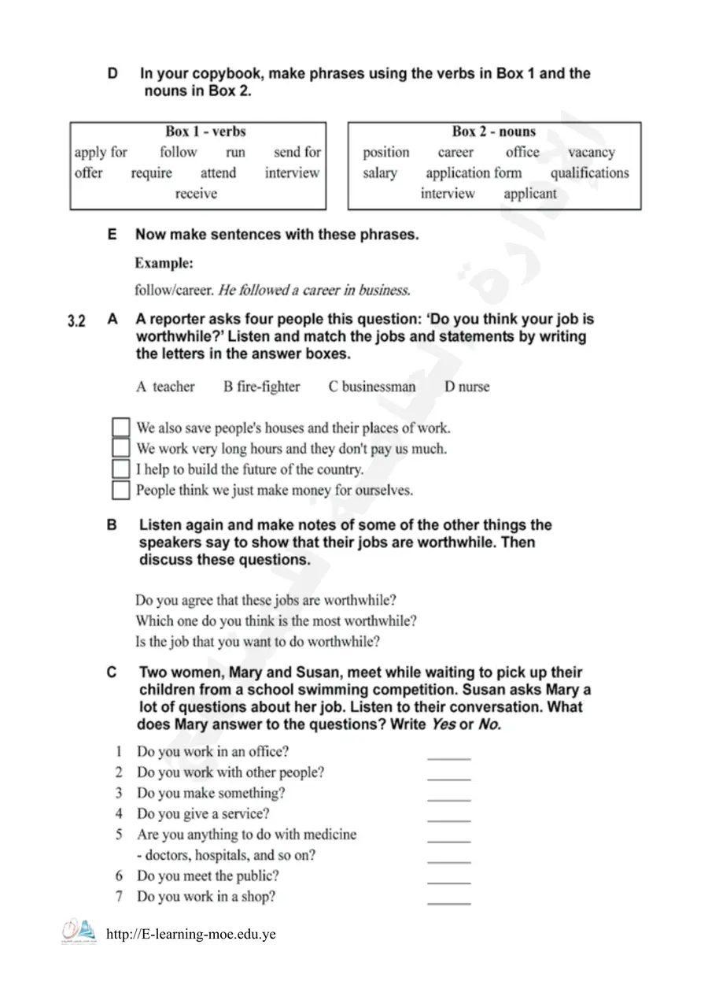

3.2 A A reporter asks four people this question: 'Do you think your job is worthwhile?' Listen and match the jobs and statements by writing the letters in the answer boxes. A teacher B fire-fighter C businessman D nurse [ ] We also save people's houses and their places of work. [ ] We work very long hours and they don't pay us much. [ ] I help to build the future of the country. [ ] People think we just make money for ourselves. B Listen again and make notes of some of the other things the speakers say to show that their jobs are worthwhile. Then discuss these questions. Do you agree that these jobs are worthwhile? Which one do you think is the most worthwhile? Is the job that you want to do worthwhile?
C Two women, Mary and Susan, meet while waiting to pick up their children from a school swimming competition. Susan asks Mary a lot of questions about her job. Listen to their conversation. What does Mary answer to the questions? Write Yes or No. 1 Do you work in an office? ______ 2 Do you work with other people? ______ 3 Do you make something? ______ 4 Do you give a service? ______ 5 Are you anything to do with medicine - doctors, hospitals, and so on? ______ 6 Do you meet the public? ______ 7 Do you work in a shop? ______ (WB p. 31) 8 Do you wear special clothing in your job? Or a uniform? ______ 9 And is your job dangerous? ______ 10 You're a police officer. ______ D Listen again and answer these questions. 1 What does Susan do? 2 What will happen when Mary answers 'No' five times? 3 What does Mary do? 4 Does Susan think Mary's job is unusual? How do you know?
[
{
"letter": "1",
"word": "We also save people's houses and their places of work.",
"ar": "إنقاذ المنازل ومقار العمل",
"answer": "B"
},
{
"letter": "2",
"word": "We work very long hours and they don't pay us much.",
"ar": "ساعات عمل طويلة وأجر متواضع",
"answer": "D"
},
{
"letter": "3",
"word": "I help to build the future of the country.",
"ar": "الإسهام في بناء مستقبل الوطن",
"answer": "A"
},
{
"letter": "4",
"word": "People think we just make money for ourselves.",
"ar": "يظن الناس أننا نجني المال لأنفسنا فقط",
"answer": "C"
}
][
{
"num": 1,
"question": "Why must exact answers to 3.2 B (extra reasons speakers give) and 3.2 C & D (Susan's & Mary's jobs and Yes/No sequence) wait for the classroom audio?",
"model_answer": "The Student and Workbook PDFs do not print the listening scripts for 3.2 B–D. Notice question 10 asks 'You're a police officer.' after asking about wearing a uniform and working in a dangerous job, and D asks whether Mary answers 'No' five times — showing Susan plays a guessing game with a five-'No' limit! Specific yes/no replies and Mary's final job (e.g. if she IS or IS NOT a police officer) require the official cassette (logged in REVIEW_NEEDED.md).",
"explain_ar": "تطبيقاً للقاعدة الذهبية 7 لا نخترع محتوى شريط مفقوداً، مع إتاحة كل بنود 3.2 A–D كاملة للتنفيذ مع المعلّم."
}
]{
"wb_ocr_vs_image": "قُورنت صفحتا WB ص 30–31 مع tesseract.js eng: صُحّح الترقيم والأحرف الأولى للمربعات الفارغة ('Bfire-fighter'، 'J'، 'OJ'، 'Areporter') بصرياً من wb-031.png وwb-032.png؛ وسُجّل غياب الشريط الصوتي للجزأين B وC–D في REVIEW_NEEDED.md."
}